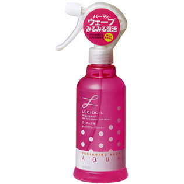

返回列表
产品名称：ルシードエル デザイニングアクア ＃マシュマロウェーブウォーター（パーマヘア用）

マンダム ルシードエル デザイニングアクア ＃マシュマロウェーブウォーター（パーマヘア用） ２５０ｍｌ
メーカー マンダム
JANコード 4902806246810
商品の特徴
パーマのウェーブみるみる復活
- 成分・分量
- 水、エタノール、ＰＧ、ＰＰＧ１４ジグリセリル、（メタクリロイルオキシエチルカルボキシベタイン／メタクリル酸アルキル）コポリマー、リン酸Ｎａ、ＰＥＧ６０水添ヒマシ油、ステアルトリモニウムクロリド、リン酸２Ｎａ、パンテノール、香料
- 用法及び用量
- 髪から５～１０ｃｍはなして髪が湿る程度にスプレーしウェーブを手で握るなどしてなじませたあと自然乾燥またはドライヤー等で仕上げてください。デジタルパーマの方は、スプレー後、指でカール部分をクルクルねじりながらドライヤーで乾かしてください